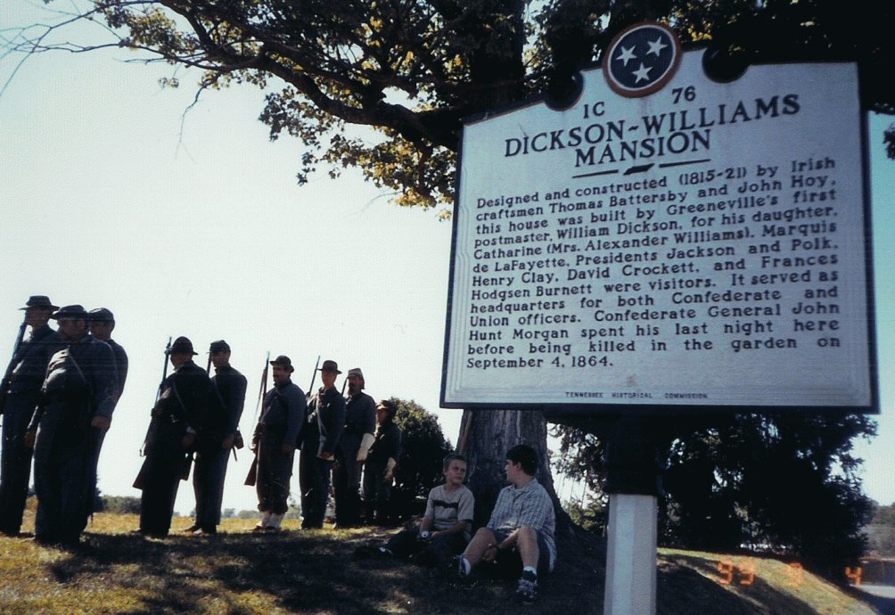

108 North
Irish Street
Greeneville, TN 37743

Civil War Reneactors prepare for a monument dedication ceremony at the Dickson-Williams Mansion. The monument is in memory of Confederate General John Hunt Morgan, who was killed on the grounds, 4 Sept, 1864, after spending his last night as a guest of the Williams family. The Alexander and Catharine Williams family had one son in the Confederate Army, and another in the Union Army. Photo by Scott K. Williams.
The front of the Dickson-Williams Mansion, as it appeared in 1999. Photo by Scott K. Williams.
The back side of the Dickson-Williams Mansion in Greeneville, Tennessee. Photo by Scott K. Williams, Sept. 1999.
Left to right: Scott K. Williams; John Karel; James H. Williams. Photo taken during the September 1999 monument dedication to Gen. John Hunt Morgan. The Morgan's Men Association organized and financed the monument. This is an organization composed of descendants of both the men who rode with Gen. Morgan AND of the brave Union soldiers that fought against him. [Side note: All three are from St. Louis, Mo. -- John Karel is the Superintendent in charge of the restoration of Tower Grove Park in St. Louis. Scott and his father James H. Williams are kinsmen of the Greeneville Alexander Williams family. John Karel, besides being a history buff, was interested in the botany of the Greeneville vicinity. He is restoring plant species to Henry Shaw's Tower Grove Park. It was a pleasant surprise to meet John at the hotel, a wonderful fellow.]
Williams Family History
(For A More Comprehensive Family Sketch, see Early Descendants of John Williams of Hanover Co., Va)
Alexander Williams, b. 28 Apr 1793, d. 4 Aug 1852. He was the son of Col. Joseph Williams and Rebecca Lanier of Surry Co., North Carolina. Married 29 Sep 1823 to Catherine Douglas Dickson, daughter of William and Eliza Douglas Dickson of Greenville, TN In their mansion in Greenville, they entertained guest like the Marquis de Lafayette, Davy Crockett, Henry Clay, Presidents Andrew Jackson and James Knox Polk. Gen. John Hunt Morgan, CSA slept here (3 Sept 1864, the night before he was killed by Union troops.
Elizabeth Douglas Williams, b. 5 June 1824, d. 7 Sept 1873. Married 13 April 1843 to William Henry Sneed.
__________Williams, son born 1826. (assume died in infancy)
William Dickson Williams, b. 1828, d. 1906. Married Sarah Ann Broyles on 1 Aug 1860. Buried at Oak Grove Cemetery, Greeneville, TN.
Alexander Williams, b. 22 Jun 1861. Died in infancy.
William Dickson Williams, Jr. b. 16 Nov 1862. d. 4 Sep, 1927. Lawyer in Knoxville, TN. Unmarried.
Lucian Taliaferro Williams, b. 17 Sep 1865, d. 18 Apr 1897. Unmarried.
Margaret Douglas Williams, b. 25 Mar 1868, d. 2 Feb 1897. Unmarried.
John Quinard Williams, b. 10 Jul 1871 d. 31 Aug 1931. Unmarried.
Marie Lanier Williams, b. 29 Aug 1875, d. 1970. Unmarried.
Zoe Lucile Willliams, b. 23 Sep 1878 d. 31 Aug 1939. Unmarried.
Joseph Alexander Williams, b. 3 May 1832, d. 21 Jun 1913. Buried at Oak Grove Cemetery, Greeneville, TN. Married 1st Lucy Rumbaugh in 1861. Divorced. Married 2nd to Mary Pattent in 1881. Served in the Union Army.
Thomas Lanier Williams, b. 7 Sept 1838, d. 13 Sep 1895. Buried in Oak Grove Cemetery, Greeneville, TN. Married Mary Margaret Simpson May on 1 May 1870. Thomas was a Captain in the Confederate Army.
Eliza Sneed "Lida" Williams, Married Robert O. Hunter.
Richard Franklin Williams, married Annie Huff.
William Dickson Williams, b. 3 Mar 1878, Greenville, TN, d. 26 Jan 1934. Married Martha Ann Naff on 9 Nov 1910.
Thomas Lanier Williams, Jr. , b. 1877, d. 21 Apr 1902.
Maria L. Williams, b. 1884, d. 1904.
Anna Simpson Williams, b. 30 Jun 1886, d. 30 Aug 1970. Married Basil Hyder.
Williams Family History Contact: Scott K. Williams, at showmemule"at"earthlink.net (replace "at" with @ ).
Home: History's Time Portal to Old St. Louis